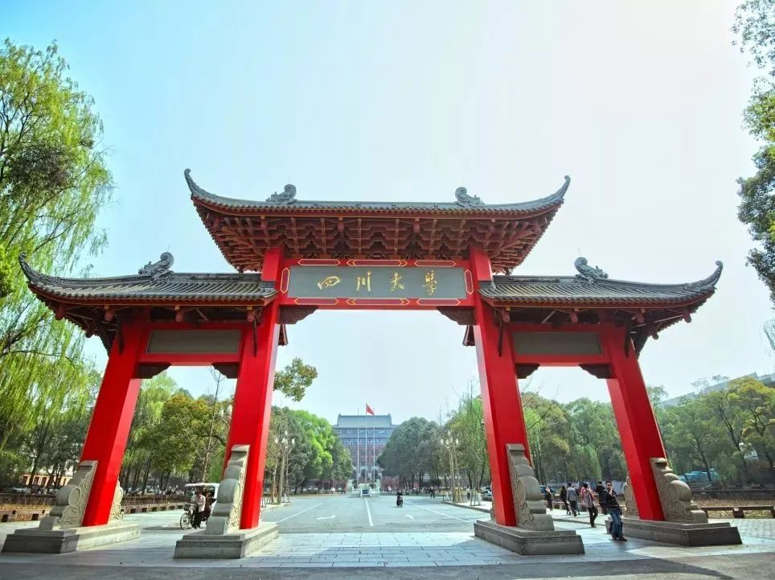

学院通知 · 科研创新
【人才招聘】四川大学物理学院2024年全球招聘暨英国站海外人才交流会
发布时间：2024-05-21
四川大学地处“天府之国”成都，是教育部直属高水平研究型综合大学、国家“双一流”建设A类高校，是全国学科门类最齐全、办学规模最大的高校之一。四川大学物理学科正式建立于1926年，距今已有98年的学科历史，先后孕育、发展出了四川大学的无线电电子学、光电技术和材料科学等学科，为学校的发展做出了重大贡献，也为国家培养了大量杰出人才，其中包括7位院士。 学院介绍 四川大学物理学院现有教职员工276人，设有物理学系、核工程与核技术系、微电子学系。拥有原子与分子物理研究所、原子核科学技术研究所、高能量密度物理及技术教育部重点实验室、辐射物理及技术教育部重点实验室、以及国家大学生双创平台-四川大学前沿物理分中心；物理学先后入选国家拔尖计划2.0、国家首批强基计划、国家首批一流本科专业建设点。“量子科学与新型外场下的物理学”、“基于加速器的核科学与技术”入选四川大学“双一流”建设超前部署学科。学院近年来取得了突出的科研成果，在Science 发表论文3篇；Nature正刊1篇；在Nature Materials、Nature Energy、Physical Review Letters等及其他重要期刊发表论文900余篇；近5年进校经费超过3.7亿元。 招聘专业方向 根据学院一流学科建设规划，诚招优秀人才。招聘方向包括理论物理、粒子物理与原子核物理、原子与分子物理、凝聚态物理、光学、等离子体物理、医学物理，核技术及应用、微电子学以及物理学交叉学科包括纳米、材料、能源等前沿学科方向。 人才需求及待遇 1、顶尖人才 条件 ：在服务国家重大战略需求和经济社会发展等方面发挥重大作用、站在学科最前沿、具有赶超和引领国际先进水平的学术大师和战略科学家，包括诺奖、菲尔兹奖、图灵奖等综合性和学科型国际公认顶级大奖获得者，主要科技发达国家科学院、工程院院士等顶尖人才等。 待遇 ：讲席教授岗位、教育事业编制，具有国际竞争力的薪酬待遇、全周期服务保障，一事一议、一人一策,上不封顶。 2、领军人才 条件 ：取得国内外同行公认的重要成就，在海内外具有较大影响力，具有带领团队协同攻关能力的领军人才；或长期从事教学一线工作，对教育思想和教学方法有重要创新，教学成果和教育质量突出，在学生培养方面取得重要贡献的领军人才，包括世界一流大学或一流学科教授、副教授，世界著名研究机构或世界著名企业研发部门首席科学家或核心骨干等。 待遇 ：海纳特聘教授岗位、教育事业编制，具有国际竞争力的薪酬待遇、全周期服务保障，一事一议，配置科研助手，协助组建科研团队，提供可立即开展工作所需的科研启动经费。在基本养老保险、医疗、住房、签证、购换汇、配偶工作、子女读书等方面给予保障。 3、国家级优秀青年人才 条件 ：取得具有重要学术影响的标志性研究成果，具有成为该领域学术带头人或杰出人才的发展潜力，包括世界一流大学或一流学科助理教授，世界著名研究机构或世界著名企业研发部门研究骨干或其他海外优秀青年人才等。 待遇 ：海纳青年学者岗位、教育事业编制，具有竞争力的薪酬待遇和科研启动经费，配备博士后，绿色通道认定博导资格。按相关规定提供基本养老保险、医疗、住房、签证等方面的支持保障,并协助解决配偶工作，子女入学等问题。 4、青年人才 （1）博士后 条件 ：在所从事研究领域崭露头角，获得较高学术成就，具有较强的创新发展潜力，包括世界一流大学或一流学科博士(后)、世界知名大学博士(后)、发达国家和地区博士(后)。其他海外人才和部分特殊海外人才等。 待遇 ：特聘序列岗位(含特聘研究员、特聘副研究员)，薪酬待遇按照学校文件执行，按照岗位类别提供相应科研启动经费、住房待遇以及支持保障服务，特别优秀者，可适当上浮。 （2）博士 条件 ：年龄不超过35岁：具有国内外高水平大学博士学位，有良好的科学研究经历和教育背景，符合岗位要求的资格条件和工作能力。 待遇 ：特聘副研究员、助理教授或博士后岗位,学校年薪叠加省市资助年收入可达42万元以上。积极支持申报国家自然基金、中国博士后科学基金、“博新计划”等。可申请学校周转房；享受子女入托入学、医疗服务等后勤保障政策。 5、双百人才工程 双百人才工程A计划： 年龄一般不超过42周岁(特别优秀者可适当放宽)，取得国内外同行公认的重要成就,在学科建设、人才培养、科学研究、技术创新等方面的学术带头人。 双百人才工程B计划： 年龄一般不超过35周岁(海外引进可适当放宽)，具有卓越的科研攻坚和技术创新潜力，取得突出学术成果的青年杰出人才。 【“川”越山海，“大”有可为】四川大学2024年全球招聘宣讲英国站诚邀您参加 报名流程 有意参会学者，请扫描识别下方二维码，填写提交报名信息： 报名链接: http://bm.gaoxiaojob.com/vm/PofaHf3.aspx 提示 ：活动将为参会学者提供餐食及路费补贴，请务必预先填写提交报名信息，以便组织提前准备安排。 如需咨询本次活动的相关信息，请添加工作人员微信号。工作人员将及时为您解答，并邀请您加入活动专属社群，同步相关活动安排。 添加请备注：姓名+四川大学+场次名称（示例：李川+四川大学+英国伦敦站） 相关说明 ： 访问团在英国停留期间，如有在本领域已经取得较大成果或在当地获得教职的学者，或博士毕业的学者，有一对一沟通意愿的，可在填写报名信息时添加相关选项，访问团活动期间将尽可能安排面谈交流。 物理及相关领域拟参会学者请提前将个人简历发送至学院招聘邮箱 ： Dean_Physics@scu.edu.cn physics_talent@scu.edu.cn 物理学院应聘联系方式 联系人 ： 张院长：手机号086 13980628162 汪老师：手机号086 13982044126 邮箱 ： Dean_Physics@scu.edu.cn physics_talent@scu.edu.cn
